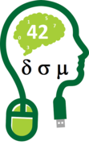
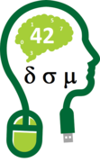

Feb 18-19, 2016 at the Melbourne Zoo
Programme
Sponsors
| Data Science Melbourne will host a meetup featuring Hadley Wickham in the evening of Mon Feb 22, 2016. |  |
| Data Science Melbourne will host a meetup featuring Hadley Wickham in the evening of Mon Feb 22, 2016. |  |